You may have noticed, however, that what you see here is not the same as the IRIX
workstation in the Original Jurassic Park movie.
Vous avez peut-être remarqué, cependant, que ce que vous voyez ici n'est pas le même que le
poste de travail IRIX dans le film Original Jurassic Park.
The reason for this is the answer to the following question: do you have any
idea what IRIX is?
La raison en est la réponse à la question suivante: avez-vous une idée de ce
qu'est IRIX?
The answer is no.
La réponse est non.
Even if Silicon Graphics only became defunct in as late as 2009, not many people have any idea what the
company was, and not many people have ever used the actual operating system. It is thus not very
impressive for anyone.
Même si Silicon Graphics n’a disparu qu’en 2009, peu de gens ont une idée de ce que
la compagnie était, et peu de gens ont déjà utilisé leur système d'exploitation. Il n’est donc pas très
impressionnant pour tout le monde.
We, on the other hand, wanted to make something that would be impressive, and, well, Silicon
Graphics just didn't really achieve that goal. Most people, however, have used a Mac before, and have seen the MacOS operating system.
Nous, d'autre part, voulions faire quelque chose qui serait impressionnant , et, bien, Silicon
Les graphiques n'ont tout simplement pas vraiment atteint cet objectif. Cependant, la
plupart des gens ont déjà utilisé un Mac et ont vu le système d'exploitation MacOS.
This is Rhapsody
Ceci est Rhapsody
At about the same as IRIX was being developed, Apple was also creating an operating system of its own,
which greatly resemble IRIX, called Mac OS X Server 1.0.
À peu près au moment où IRIX était en cours de développement, Apple créait également son propre système
d'exploitation, qui ressemble beaucoup à IRIX, appelé Mac OS X Server 1.0.
Before releasing Mac OS X Server 1.0, however, Apple released unstable versions only meant for
developers. These were called Rhapsody Developer Release 1 and Rhapsody Developer Release 2, respectively.
Avant de publier Mac OS X Server 1.0, Apple a cependant publié des versions instables destinées
uniquement aux développeurs. Celles-ci s'appelaient respectivement Rhapsody Developer Release 1 et
Rhapsody Developer Release 2.
The robotics website is based off of Rhapsody Developer Release 2. Although We have attempted to emulate
most of its features, it is not indetical.
Le site Web de robotique est basé sur Rhapsody Developer Release 2. Bien que nous ayons tenté d'émuler
la plupart de ses fonctionnalités, il n'est pas indétique.
The following video is a demo of Rhapsody Developer Release 1.
Rhapsody
Please note that the below video does not belong to Lower Canada College and has been
uploaded by a third party who is not affiliated with Lower Canada College.
Using the Site
Comment utiliser le site web
Installing Apps
Comment installer des applications
Each app on the operating system represents a website component as per the CRC rulebook. If this is a
new account, there is no app currently installed on the system.
Chaque application du système d'exploitation représente un composant de site Web conformément au livre
de règles CRC. S'il s'agit d'un nouveau compte, aucune application n'est actuellement installée sur le
système.
In the authentic Rhapsody, you would have had to use some kind of browser to obtain apps, just as we do today. Here,
however, installing apps is done through the App Installer. Open
the App Installer by pressing on the Tools menu at the top of your screen and clicking App Installer.
Dans l'authentique Rhapsody, vous auriez dû utiliser une sorte de navigateur pour obtenir des
applications, comme nous le faisons aujourd'hui. Ici, ouvrez le programme d'installation d'applications
en appuyant sur le menu Outils en haut de votre écran et en cliquant sur le programme d'installation
d'applications.
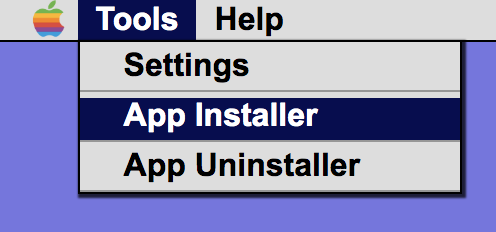
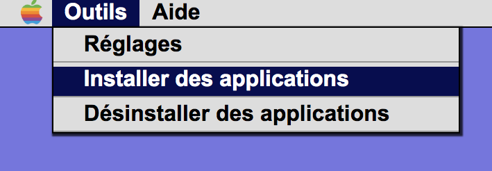
Then, in the menu that opens, select the app you wish to install and click Install.
Ensuite, dans le menu qui s'ouvre, sélectionnez l'application que vous souhaitez installer et cliquez
sur Installer.
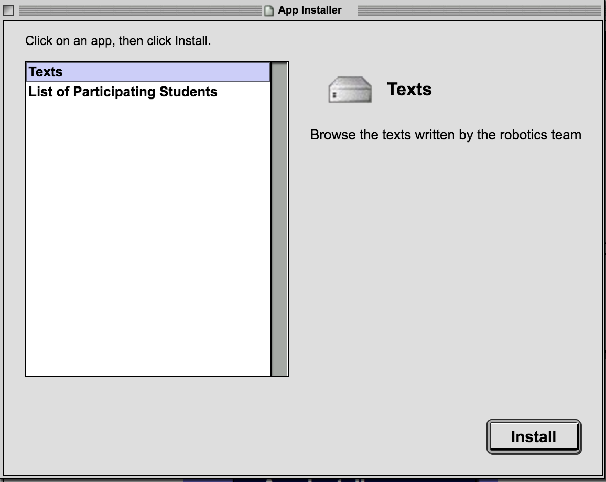
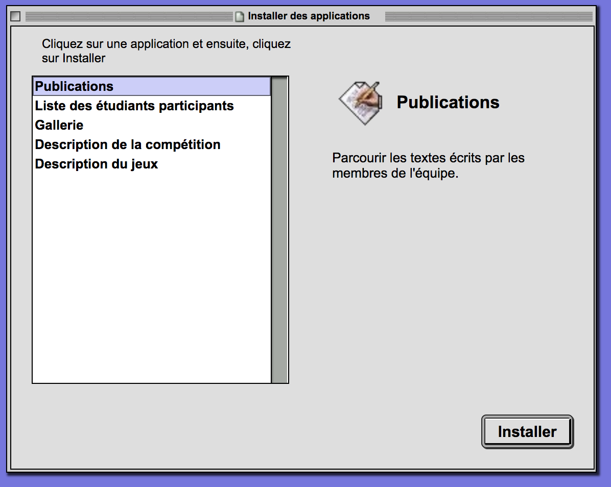
Moving WindowsDéplacer les fenêtres
What you see in front of you is called a window. Windows can be dragged around the desktop. To do so,
click and drag on the top part of the window.Ce que vous voyez devant vous s'appelle une fenêtre. Elles peut être déplacé sur le bureau. Pour ce
faire, cliquez et faites glisser sur la partie supérieure de la fenêtre.
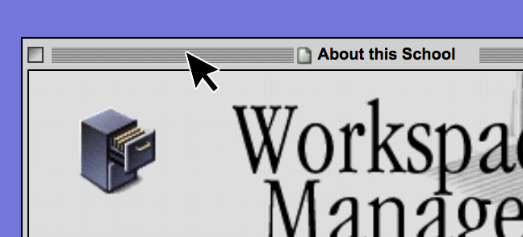
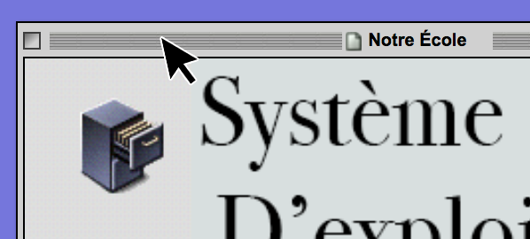
Closing WindowsComment fermer une fenêtre
In some modern Operating Systems, there is a small cross icon that must be clicked to close the window.
This was not the case in Rhapsody or IRIX. To close a window, click on the box on its top left.Dans certains systèmes d'exploitation modernes, une petite icône en forme de croix doit être cliquée
pour fermer la fenêtre. Ce n'était pas le cas dans Rhapsody ou IRIX. Pour fermer une fenêtre, cliquez sur
la case en haut à gauche.
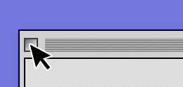
Opening AppsComment ouvrir des applications
Once the app is installed, you can head over to the desktop (keep in mind that the windows can be
dragged by grabbing their top) and double-click on the icon.Une fois l'application installée, vous pouvez vous diriger vers le bureau (gardez à l'esprit que les
fenêtres peuvent être déplacées en saisissant leur partie supérieure) et double-cliquez sur l'icône.
Uninstalling AppsPour désinstaller des applications
To delete an app, you must simply click on the App Uninstaller under Tools and click Uninstall.
Pour supprimer une application, vous devez simplement cliquer sur le programme de désinstallation
d'application sous Outils et cliquer sur Désinstaller.
Changing the LanguagePour changer la langue du système
To change the language of the operating system, head over to Tools and click on Preferences.Pour changer la langue du système d'exploitation, rendez-vous sur Outils et cliquez sur Préférences.
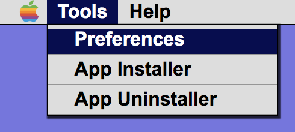
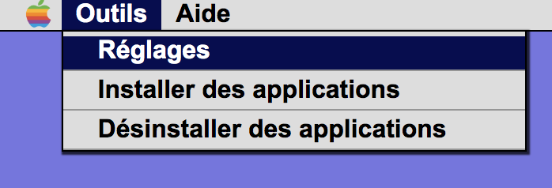
Then, click on Language and Open.
Ensuite, cliquez sur Langue du système et sur Ouvrir.
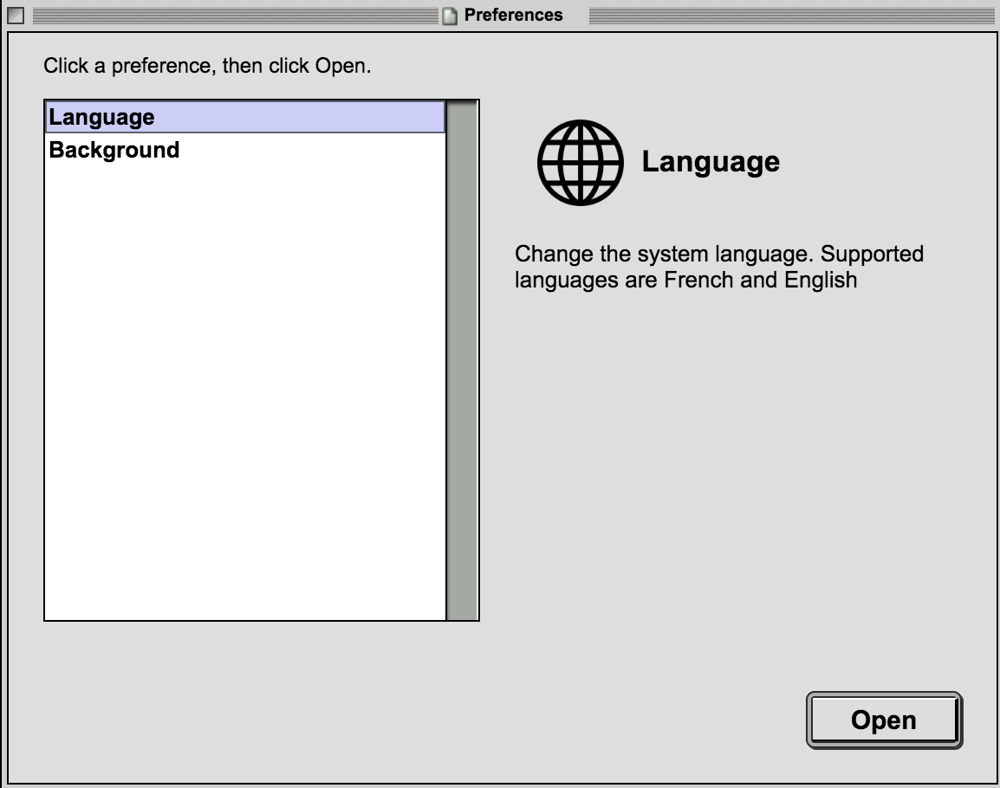
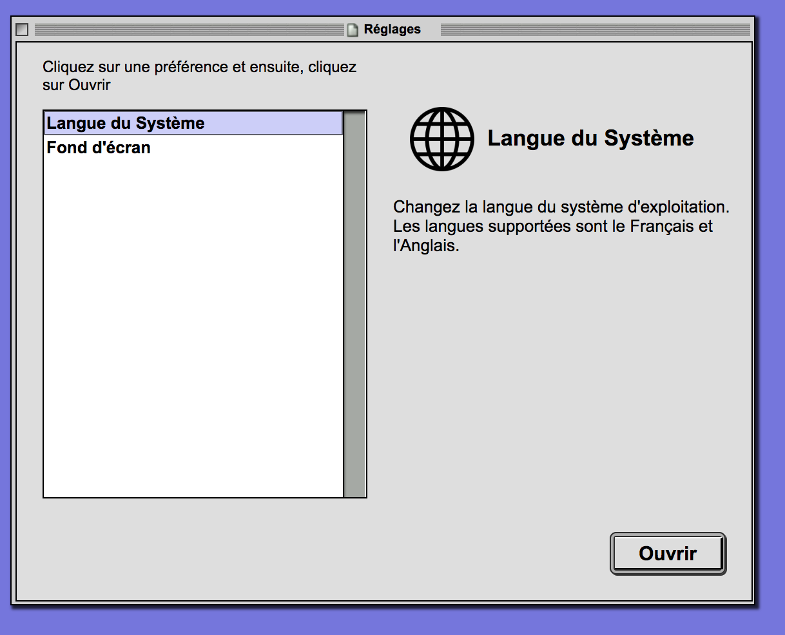
Then, click on your desired language and click Select.La dernière étape est de choisir la langue et cliquer sur Sélectionner.